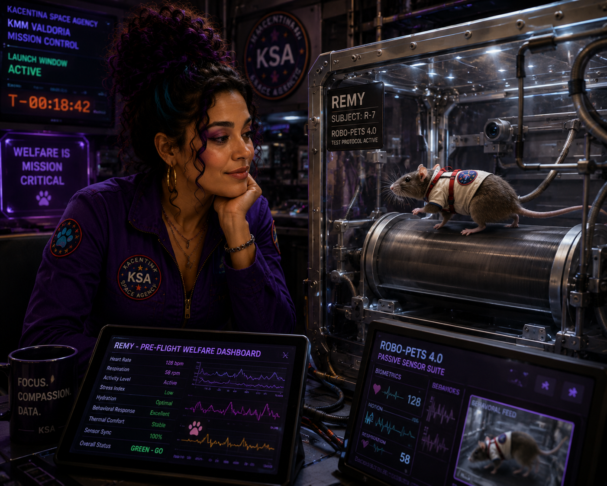
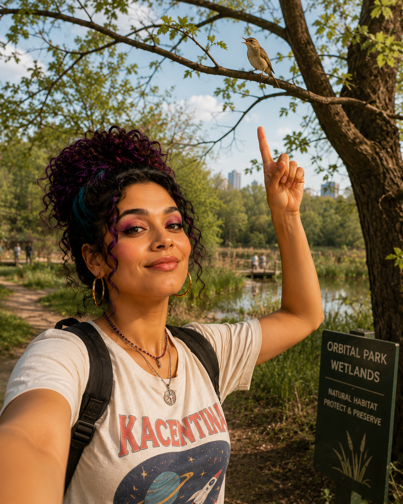
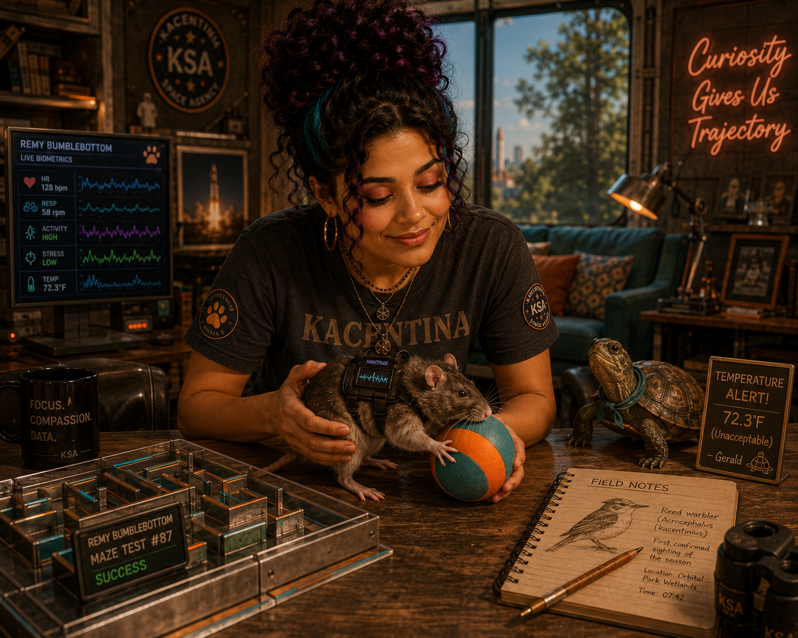

We are within the launch window. While Remy has cleared every pre-flight welfare benchmark, we could see a new development where the RoboPets 4.0 sensor suite provides all the safety my little guy needs. I will be doing some last minute tinkering with a few things leading up mission.
I want to say something clearly: Remy was chosen because he is exceptional — with everything he has demonstrated across thousands of training cycles there's no animal better prepped for launch. However, when there are other choices, we have to cover all the bases.
To everyone who has pushed me to think harder about what it means to advocate for a non-human subject in an extreme environment — including @PeteyProtects and the FART community — your questions made this documentation more rigorous and more honest. The framework is better because of that pressure. Thank you. Federation for Assisting Rats and Turtles #KMMValdoria #Remy #AnimalWelfare #FART

For context on why this matters — not just technically but ethically — the best framework I've encountered is from the Federation for Assisting Rats and Turtles. Their paper on animal exploration models is worth reading regardless of where you land on the broader debate. #RoboPets #AnimalWelfare #FART #KMMValdoria
Their central argument — that tech-in-space is a more ethical model than animals-in-space because it documents the real sensor data rather than emotional response — maps well onto questions I've had about how to move forward with Remy's data. I don't agree with every conclusion. But I think the questions they're asking are the right ones. The RoboPets technology partnership they reference is also worth following. This space is moving faster than the ethics frameworks and that gap matters. #AnimalWelfare #FART #SpaceEthics #RoboPets

Day off. First confirmed sighting of a Kacentian reed warbler (Acrocephalus kacentinius) in the Orbital Park wetlands this spring. Gerald would have approved of the pace. 🦅🌿
Sometimes the best thing you can do for your research brain is step outside and remember why you got into biology in the first place. Not the lab biology. The whole thing. #Birdwatching #Kacentinius #FieldNotes
Gerald passed his zero-gravity orientation certification on the third attempt. He does not hurry, but he finishes. Toulouse has been temporarily relocated following an incident with the water recycler sensor that I am not yet ready to discuss publicly.
There's so much talk about RoboPets replacing hard workers like Remy, but nothing could ever come close to being as good as this little guy. #AnimalWelfare #SpaceBiology #RoboPets #RemyBumblebottom

Day one with my newest research subject. Everyone: meet Remy Barnaby Bumblebottom. 🐀
He arrived this morning from the KSA breeding facility and immediately solved the orientation maze in 47 seconds. Our previous record was 4 minutes, 12 seconds. He then sat down and groomed himself like nothing happened. I'm already in trouble.
Also under my care this cycle: Gerald the turtle (certified philosopher, refuses to be rushed, has been here three years and has strong opinions about the lab temperature) and Toulouse the hamster (active ongoing threat to lab equipment, we are managing it).
Anybody trying to say technology can do a better job than a well trained and cared for animal, NAY EXPLORER, are silly. #AnimalResearch #KSA #RemyBumblebottom #RoboPets